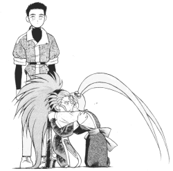

Tenchi FanFics Voting Booth |
Vote for your favorite Tenchi Fan Fic. The only requirement is that it MUST be in this archive. If not, please E-mail me or the author to have it placed here. Voting is seasonal and you are allowed one vote per season. |
Vote
for your favorite Tenchi fanfic (Down
pending revision)
Vote for your favorite Tenchi Muyo fan fiction here.
View Votes
for Current Winter 2001 Season (Down
pending revision)
View other peoples votes and their comments.
Past Voting Season Results
View the Results of the past voting season.
Most Recent Voting Season Results
Here is where the results for the most recent voting season. This season started on 9/1/2000 and ended on 11/30/2000. If you have not voted for the newest season yet, then please do so. You are allowed to vote once each season. People occasionally change their opinions of fics and they have new favorites. Also It helps allow one to give reconision to stories that deserve it. So vote for newer fics.
Fall 2000 Season: Top Ten Tenchi Fan Fics
| Rank | Votes | Vote % | Title | Author |
1 |
44 |
22.6% |
Long T. Tran (DrEvilTran@cs.com) |
|
2 |
36 |
18.5% |
"Aikan Muyo" |
Happosai (happosai@subdimension.com) |
3 |
28 |
14.4% |
Horse_w_no_name (horse_w_no_name@cheerful.com) |
|
4 |
22 |
11.3% |
Thomas "009" Doscher (doscher009@hotmail.com) |
|
5 |
19 |
9.8% |
Literary Eagle (literaryeagle@hotmail.com) |
|
8 |
11 |
5.7% |
Thomas "009" Doscher (doscher009@hotmail.com) |
|
8 |
11 |
5.7% |
Thomas "009" Doscher (doscher009@hotmail.com) |
|
8 |
11 |
5.7% |
Thomas "009" Doscher (doscher009@hotmail.com) |
|
10 |
10 |
5.2% |
Brook "The Total Anime Nut" Kuhn (bkuhn@ucsd.edu) |
|
10 |
10 |
5.2% |
Zyraen (zyraen@yahoo.com) |
Fall 2000 Season: Vote Tally
44 Ryoko's Love
36 Aikan Muyo
28 In This Moment
22 Destiny's Balance
19 Confess to you
11 Daughters of Twilight
11 Ma Petite Washu
11 The Last Avatar
10 Darkness and Light
10 To Love and To Hate
09 Heaven and Night
09 Princess Ryoko Jurai
08 Hands of Fate
07 Culture Shock
07 The Princeless Bride
07 The Devil and Miss Mihoshi
06 Sleepless Nights
06 Whispers in the Wind
06 For a Princess
06 A Very Tenchi Christmas
05 My Little One
05 The Gentle Sound of Thunder
05 Magical Girl Adorable Achika
05 Tenchi's True Love
05 My Sisters Toreishi
05 The Dark Juraian
05 No Need For Sasami
05 Ryoko's Gems
04 Ryoko's Heart
04 Forever Isn't Long Enough
04 Gentleness and Strength
04 Every Lesson Learned
04 Red tears, Salty Blood
04 Three Gems for Power
04 No Need For Grief
04 Bishonen Muyo
04 Ryoko Saotome
04 Trouble, With a Twist of Lime
03 First Knight
03 Love and Life
03 No need for Virgins
03 Miss You Always
03 Follow Your Heart
03 Blood Red Moon
03 The Dawn of Freedom
03 Love With Honor
03 For the love of Kiyone
03 brief taste of eternity
03 Kagato's Revenge
03 Empire
03 Heaven and Eternity
02 Call me Mother!
02 For the Blood God
02 Sasami's Quest
02 A Startica Song
02 The Bonds of Sisterhood
02 Eternal Heavens
02 The Cabbit
02 Tenchi Muyo:Mind, Body, Hearts and Souls
02 Avenger of his death
02 Ryoko and Tenchi: together forever
02 Something More
02 Ryokos Precious Secret
02 Fukanzen
02 Behind The Scenes
02 A change of state
02 A Call to Arms
02 Unforgivable Sin
02 Conspiracies By Candlelight
02 Dark Rain Saga
02 Silver Petals Are Really F***** Up
02 Aeka Muyo!
02 The Prince and the Pirate
02 The Mihoshi Incident
02 The Scarlet Deluge
02 Legacy of Kain
02 Valentine Tales: A Tenchi Muyo Story "Sasami gets Tenchi"
02 Take two
02 Revenge on Ryo-ohki
01 The Dating Game
01 That Time of The Month!
01 Touch of Insanity
01 Tenchi's Choice...enter Kiyone
01 Tenchi's Revenge
01 Tenchi's Decision
01 Anime Deathmatch: Ranma 1/2 vs. Tenchi Muyo
01 No Need for a Thing
01 Kanisha no Ima
01 pokmyuo
01 No need to be second
01 Everyone hates mornings
01 No need for daydreams and preparations
01 Tenchi Muyo: So Anxious
01 No Need For Heavy Metal!
01 no need for a wedding
01 Love's Lost Labor
01 No Need For Japan
01 Ryo-Ohki Saga
01 No Need for Sailor Scouts
01 This is totally cresent fresh
01 no need for heavy metal
02 No need for a super sayan
01 Shattered Mirror Mended
01 No Need For Thinking of Me
01 Code of Honor
01 NO NEED FOR STRANGERS
01 It's the Small Things that Matter
01 Onna-Tenchi Muyo
01 Time's Vendetta
01 Tenchi and Ranma, Together Forever?
01 Family Trees
01 Underneath the Mistletoe
01 A Moment of Weakness
01 The Tenchi Chronicals
01 Come and Gong
01 Ryoko's Question
01 The Worst Self Insert Ever Written
01 Senile Shinto Priest
01 college is life ever normal
01 House full of Ohki's
01 Angels, Heaven and Earth
01 Mind Triangle #1
01 No Need To Stay
01 Day of The Carnaval
01 Love At The Shrine
01 old foe, new foe
01 With all my Heart
01 It's the Small Things that Matter
01 Fantasic Journey
01 Shattered Mirror Mended
01 No Need for Zerg
01 Ayeka Talk'n Dirty
01 little demon
01 some place
01 I've forgotten
01 What might of been
01 One True Princess
01 The Devil Princess from Jurai
01 Two Guys, a Girl, and a Giant Lizard
01 The Girl Who Wasn't and the Princess Who Was
01 Paradise Lost
01 Love Boat: Joe Higashi gets the girl (Well, Almost)
01 mosha in sakyer erith
01 The Villain's Crusade
01 Faith and Consequence
01 Kith and Kin
01 tachi battles bssm
01 The Typical Tenchi Muyo! Fanfiction
01 In The Begining
01 A Typical Masaki Morning
01 Times vendeta
01 Taifun
01 Springer
01 Tenchi on a plate of sashimi
01 Enviable Destiny
01 No need for a swap
01 Tenchi and Ryoko forever
01 Thorns
01 Fear
01 Tenchi Mucho!
01 tenchi finds...
01 many many others
01 much more
01 No Need for Vacations
01 Two Guys, Two Girls, a Roshtarian Princess, and a Magical Girl MST "The
Switch"
01 Tenchi Muyo: Mind, Body, Hearts and Souls
01 At The Carrot Patch
01 Love N Loss
01 Tenchi Universe : Infity Series
01 Runaway Horses: The Kiyone Makibi Affair
01 The Powers that Be
01 Images of Tenchi
01 Love's Labor Lost
01 Dance of Shiva
01 Tenchi Gay?!
01 A Flower Blooms
01 A Candle, A Flame
01 The Great Potato War
01 Standing Outside The Fire
01 Perfect Circle
01 Rikka Ven
01 Love and Stars
01 Tenchi Muyo-- H Adventure Series
01 Tenchiballmoon
01 Wag the Cabbit
01 Death of a Scientist
01 Adagio
01 Chrono Muyo
01 Cabbula
01 Tenchi Muyo: Legend
01 No need for a rescue
01 If Wishes were Cabbits
01 Cabbit Trouble
01 Wrath of washu
01 Aeka's Mirror
01 Masaki Family Line
01 My Best Friends Wedding
01 Empires Dusk
01 I Forgotten
01 Until All the Stars are Dust
01 Ryoko's Early Life
01 lemon lampoon
01 death takes a smoke break
01 Union
01 Yosho, The Old Man Who Rapes Teenage Boys
01 Hands
01 Heaven and Earth
01 Star of Jurai
01 Confessions
01 The Legend of Fantaria
01 Mother's Day
01 Under the Cherry Blosoms
01 MST Special #1 A lemon to be dealt with
01 Tenchi Muyo: THE MOVIE
01 Tenchi/Tommy Rock Opera
01 The Prince's Sorrow
01 Incrediable Night
01 Same as it ever was
01 What Happened Next?
01 Regretful Messiah
01 Nintenchi
01 No need for Motherhood
01 Memoirs of a Goddess
01 when goddess attack
01 NNF A Reality Check
01 A Tenchi Christmas Story: I saw Ryoko kissing Tenchi under the mistletoe
01 Ah! Megami-sama Muyo
01 from the blood of the gods
01 The Hearth of a Demon and the Tear of a Mother
01 The Darkness
01 Pirate Clu
01 trials of motherhood
01 Tenchi vs. the Andriods
01 THE HITCHHIKERS GUIDE TO SPACE PIRATES
01 SOUTHPARK MUYO - No NEED FOR FOR KENNY
01 MST of 10-chi clan's quickies by the Psychomatic Poet
01 Sasami's Lemony Revenge
01 Galaxy police :lemon abound
01 Sasami's lemon
01 The Greatest Lemon Ever
01 Tenko
01 Duty
01 Full Circle OAV